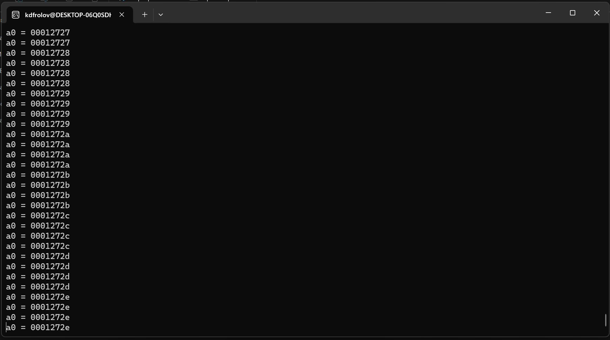
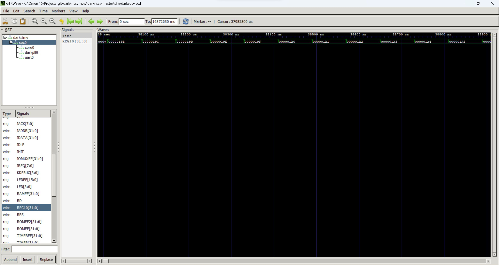
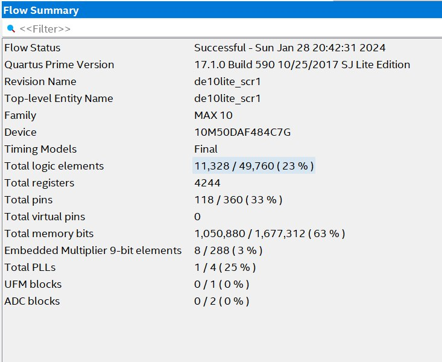

Отчёт от 28.01.2024
Результаты
- Успешная симуляция работы программы на DarkRISCV
- Успешный синтез SCR1 через подготовленный sdk
- Пообщались с ребятами из Digital Design Community
DarkRISCV
В прошлый раз у нас получилось синтезировать ядро и загрузить его на плату, но мы не могли проверить его работоспособность, поэтому на этой неделе мы решили написать программу-счетчик (3 строки на ассемблере) и загрузить её вместо заготовленной программы-загрузчика.
Подготовка к загрузке
Для начала был добавлен вывод регистра x10 на семисегментные дисплей, был взят модуль конвертации двоичного значения в формат семисегментного дисплея и пременён для вывода, также был написан простой делитель тактов для уменьшения частоты до наблюдаемого уровня.
Подключение выводов схемы к darkriscv:
wire clk;
wire [31:0] REG10;
clk_devider devider (
CLOCK_50,
clk,
);
darksocv soc (
.XCLK ( clk ),
.XRES ( GPIO_0[14] ),
.UART_RXD (),
.UART_TXD (),
.LED (),
.DEBUG (),
.REG10 ( REG10 )
);
assign LEDR [9:0] = REG10 [9:0];
sm_hex_display hex0 (REG10[3:0], HEX0);
sm_hex_display hex1 (REG10[7:4], HEX1);
sm_hex_display hex2 (REG10[11:8], HEX2);
sm_hex_display hex3 (REG10[15:12], HEX3);
sm_hex_display hex4 (REG10[19:16], HEX4);
sm_hex_display hex5 (REG10[24:20], HEX5);
Модуль для деления тактов:
module clk_devider #(
parameter dev = 20
)(
input clkIn,
output clkOut
);
reg [31:0] cnt;
always @(posedge clkIn)
cnt = cnt + 1'b1;
assign clkOut = cnt[dev];
endmodule
Модуль для конвертации:
module sm_hex_display
(
input [3:0] digit,
output reg [6:0] seven_segments
);
always @*
case (digit)
'h0: seven_segments = 'b1000000; // g f e d c b a
'h1: seven_segments = 'b1111001;
'h2: seven_segments = 'b0100100; // --a--
'h3: seven_segments = 'b0110000; // | |
'h4: seven_segments = 'b0011001; // f b
'h5: seven_segments = 'b0010010; // | |
'h6: seven_segments = 'b0000010; // --g--
'h7: seven_segments = 'b1111000; // | |
'h8: seven_segments = 'b0000000; // e c
'h9: seven_segments = 'b0011000; // | |
'ha: seven_segments = 'b0001000; // --d--
'hb: seven_segments = 'b0000011;
'hc: seven_segments = 'b1000110;
'hd: seven_segments = 'b0100001;
'he: seven_segments = 'b0000110;
'hf: seven_segments = 'b0001110;
endcase
endmodule
Программа счётчик:
.text
add a0, zero, zero
loop: addi a0, a0, 1
j loop
Симуляция проекта
Для симуляции нужно скомпилировать файлы проекта с помощью Icarus Verilog и запустить выходной файл.

Для рассмотрения вейвформ нужно выданный в результате симуляции vdc файл передать в gtkwave.

Загрузка на плату
После успешной симуляции произвели загрузку проекта на плату, но к сожалению ни на семисегментном дисплее, ни на диодах результат работы счетчика не появился.

SCR1
Постарались начать продвижение в изучении ядра SCR1 и обратили на него ПРИСТАЛЬНОЕ ВНИМАНИЕ.
В репозитории scr1 есть ссылка на SDK для загрузки на fpga с заготовленными программами, в числе подготовленных к загрузке fpga есть и de10-lite, который имеется у нас в лаборатории, так что всё хорошо. Может быть есть смысл портировать на De1-SoC.
Был клонирован репозиторий с SDK и была произведена попытка синтеза ядра: 
Социализация
Задали интерезующие нас вопросы в Digital Design Community, в частности о SCR1 и общем подходе к изучению новых ядер.
На наш вопрос дал развёрнутый ответ Виктор Дашонок, специалист по развитию образовательных программ YADRO, от него получили следующее:
- Ссылку на SCR1 SDK
- Ссылку на задачник по программированию
- Ссылку на список ядер от risc-v (Но не все ядра там свободные)
- Предложение предоставить Early Access Kit
- Обещание связать с кем-то из специалистов
Также получили отческий совет от Юрия Панчула об общем подходе к изучению новых ядер.
Благодарны за полученные ответы.